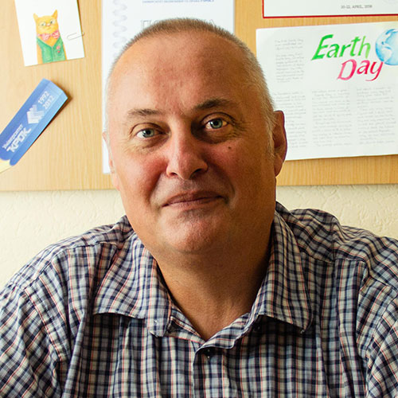
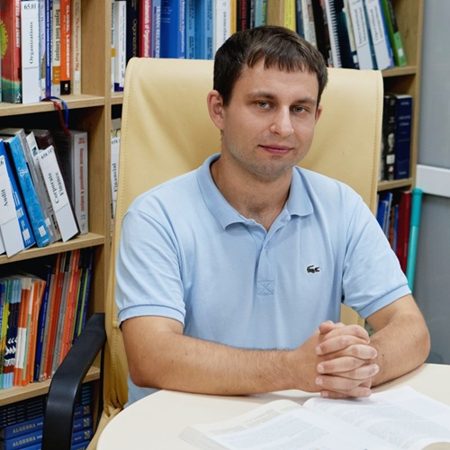

Карта приміщення
Знайти потрібні аудиторії та локації за допомогою карти приміщення. Гортайте, аби ознайомитися з картами першого поверху і підвалу.


Кому це буде цікаво?
Коротко про те, для кого ця локація буде найцікавішою та чим вона може бути корисною.
Школярам
Зацікавленим у робототехніці, електроніці та створенні власних пристроїв
Абітурієнти
Які розглядають вступ на ІТ-спеціальності та кар’єру в інженерії, IoT та автоматизації
Батьки
Які хочуть зрозуміти практичну цінність технічної освіти
Знайомтесь із нашими спікерами
Експерти, викладачі та практики, які поділяться досвідом, розкажуть про навчання, кар’єрні можливості та особливості освітніх програм.

Освітні програми
Ознайомтеся з освітніми програмами та знайдіть напрям, який найбільше відповідає вашим інтересам, цілям і майбутній професії.
Фото минулих років
Тут про атмосферу попередніх заходів, активності учасників і те, як проходила локація в минулі роки.